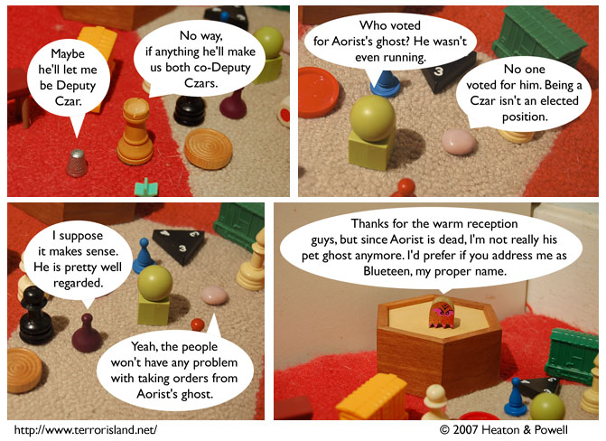

Strip #236
— Friday, December 14, 2007
Blueteen does not plan on having any Deputy Czars. That’s not how he rolls.
Notes, Thoughts, &c.
Ben’s Notes
Aorist had a pet ghost! And that ghost is now the Czar! And his name is Blueteen!
Why is his name Blueteen, you ask? I’ll let Lewis explain that one.
Lewis’s Notes
The name of Aorist’s former pet ghost is inspired by this photocomic, which we received from Mason in response to Ben’s attempt at making up an email address: